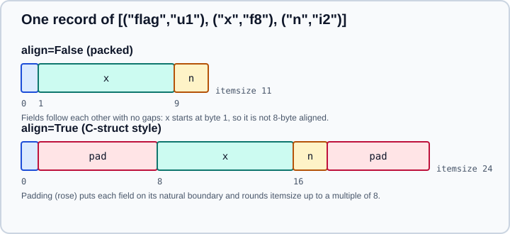

Structured Arrays
|
This content was generated with the assistance of AI and should be verified against the official documentation before being relied on in production. |
This page was checked in October 2026 against NumPy 2.5 (2.5.4 is the current patch release). Examples target Python 3.13 or 3.14 and were run on Python 3.13. Every example was run on NumPy 2.5.4.
A structured array is an ndarray whose elements are fixed-size records made of several named fields, each with its own dtype, like a C struct. They are useful for binary file formats, for talking to C and Fortran code, and for small heterogeneous tables, but they are not a replacement for a DataFrame: see the last section. The general dtype system is explained on Data Types; fixed-width and variable-width text fields are covered on Strings, Bytes & StringDType.
Creating a structured dtype
A structured dtype can be written in four ways. All of them produce a numpy.dtype whose names, fields and itemsize describe the record.
import numpy as np
# 1. list of (name, format) tuples: the most common form
dt = np.dtype([("name", "U10"), ("age", "i4"), ("weight", "f4")])
# 2. comma-separated string of formats; names default to f0, f1, ...
dt2 = np.dtype("U10, i4, f4")
# 3. dictionary with parallel lists: allows explicit offsets and itemsize
dt3 = np.dtype({"names": ["a", "b"], "formats": ["u1", "f8"],
"offsets": [0, 8], "itemsize": 16})
# 4. dictionary of name -> (format, offset[, title])
dt4 = np.dtype({"a": ("u1", 0), "b": ("f8", 8)})
x = np.array([("Rex", 9, 81.0), ("Fido", 3, 27.5)], dtype=dt)
print(x)
print(x.dtype)
print(dt3, dt3.itemsize)[('Rex', 9, 81. ) ('Fido', 3, 27.5)]
[('name', '<U10'), ('age', '<i4'), ('weight', '<f4')]
{'names': ['a', 'b'], 'formats': ['u1', '<f8'], 'offsets': [0, 8], 'itemsize': 16} 16
Each element of the array is a tuple on input. A field can have any dtype, including another structured dtype (nested records) and a sub-array shape such as ("pos", "f8", (3,)), which adds a trailing axis of 3 to that field’s view:
z = np.zeros(2, dtype=[("pos", "f8", (3,)), ("id", "i4")])
print(z["pos"].shape) # (2, 3)A field can also carry a title (an alternative label) by writing the name as a (title, name) tuple; both labels then index the field, and dtype.names lists only the name:
t = np.dtype([(("my title", "name"), "i4")])
print(t.names) # ('name',)
print(t.fields) # {'name': (dtype('int32'), 0, 'my title'), 'my title': (dtype('int32'), 0, 'my title')}Accessing and assigning fields
Indexing with a field name returns a view of that field as an ordinary array. Indexing with an integer returns a numpy.void scalar, which is a mutable view of one record. Assigning a scalar to a field fills the whole column, and assigning a tuple to a record sets every field by position:
print(x["age"], x[1], x[1]["name"])
x["age"] = 5 # fills the column in place
x[0] = ("Rex", 10, 82.0)
print(x)
print(type(x[0]))[9 3] ('Fido', 3, 27.5) Fido
[('Rex', 10, 82. ) ('Fido', 5, 27.5)]
<class 'numpy.void'>
Assignment between two structured arrays is by field position, not by field name. If the two dtypes list their fields in a different order or with different names, values are copied to the field in the same position, which is a frequent source of silent mistakes. Use recfunctions (require_fields, rename_fields) or assign field by field when names matter.
Comparison with == works for two structured arrays with equivalent dtypes and compares all fields. Ordinary arithmetic does not work on a whole structured array: operate on its fields (x["weight"] * 2).
Multi-field indexing returns a view
Indexing with a list of field names returns a view of a new, smaller structured dtype that keeps the original offsets. Since NumPy 1.16 the result is a view, so writing to it writes to the parent array, and the view’s itemsize equals the parent’s, so it can contain unused padding bytes:
y = np.zeros(3, dtype=[("a", "i4"), ("b", "f4"), ("c", "u1")])
v = y[["a", "c"]]
print(v.dtype)
print(v.dtype.itemsize, y.dtype.itemsize)
v["a"] = 7
print(y){'names': ['a', 'c'], 'formats': ['<i4', 'u1'], 'offsets': [0, 8], 'itemsize': 9}
9 9
[(7, 0., 0) (7, 0., 0) (7, 0., 0)]
Because the view keeps the original offsets and itemsize, it cannot be passed directly to code that expects a packed record of just those fields. Call numpy.lib.recfunctions.repack_fields to make a packed copy, or structured_to_unstructured to obtain a plain 2-D array.
Packed and aligned layouts
By default a structured dtype is packed: fields follow each other with no gaps. With align=True NumPy inserts padding the way a C compiler does, so each field starts on its natural alignment boundary, and rounds the total itemsize up. Use the aligned layout when sharing memory with C or Fortran code that declares the matching struct; use the packed layout for compact binary files.
fields = [("flag", "u1"), ("x", "f8"), ("n", "i2")]
for aligned in (False, True):
d = np.dtype(fields, align=aligned)
print(aligned, d.itemsize, [d.fields[k][1] for k in d.names])False 11 [0, 1, 9] True 24 [0, 8, 16]

Explicit offsets and itemsize in the dictionary form allow any layout, including overlapping fields (a C union). Overlapping fields that mix references to Python objects with plain data are not allowed.
Sorting, searching and ordering by field
numpy.sort, argsort and ndarray.sort accept order= with one field name or a list of names, which are compared in the order given. Fields not named are compared afterwards in dtype order:
print(np.sort(x, order="age"))
print(np.argsort(x, order=["weight"]))[('Fido', 5, 27.5) ('Rex', 10, 82. )]
[1 0]
See Sorting, Searching & Counting for the other options.
Source: numpy.sort
Record arrays: numpy.rec and recarray
numpy.recarray is an ndarray subclass that adds attribute access to fields (r.age in place of r["age"]). Create one with numpy.rec.array, numpy.rec.fromrecords and related constructors, or view an existing structured array as np.recarray:
r = x.view(np.recarray)
print(r.name, r.age)
print(np.rec.array([(1, 2.0), (3, 4.0)], names="i,f"))['Rex' 'Fido'] [10 5] [(1, 2.) (3, 4.)]
Record arrays have drawbacks. Attribute names clash with ndarray attributes and methods (a field called shape or sum is reached only through r["sum"]), field access through attributes is slower because it goes through the Python-level __getattribute__, and the subclass is a legacy convenience. Prefer plain structured arrays with ["name"] indexing in new code.
Source: numpy.recarray
numpy.lib.recfunctions
The helper module numpy.lib.recfunctions collects functions to transform structured arrays. It is imported explicitly:
from numpy.lib import recfunctions as rfn
print(rfn.structured_to_unstructured(y[["a", "b"]]))
print(rfn.unstructured_to_structured(np.arange(6.).reshape(3, 2),
dtype=np.dtype([("p", "f4"), ("q", "f4")])))
print(rfn.append_fields(y, "d", np.arange(3.), usemask=False).dtype)
print(rfn.rename_fields(y, {"a": "alpha"}).dtype)
print(rfn.repack_fields(np.zeros(1, dtype=np.dtype("u1, f8", align=True))).dtype)
print(rfn.require_fields(y, [("a", "f8"), ("c", "u1")]).dtype)[[7. 0.]
[7. 0.]
[7. 0.]]
[(0., 1.) (2., 3.) (4., 5.)]
[('a', '<i4'), ('b', '<f4'), ('c', 'u1'), ('d', '<f8')]
[('alpha', '<i4'), ('b', '<f4'), ('c', 'u1')]
[('f0', 'u1'), ('f1', '<f8')]
[('a', '<f8'), ('c', 'u1')]
The most used functions are:
| Function | Purpose |
|---|---|
|
Convert between a structured array and an ordinary array with a trailing axis, promoting the field types to a common type. |
|
Add, remove or rename fields and concatenate structured arrays with different fields. |
|
Join two structured arrays on a key field (inner, outer, left outer), similar to a SQL join. |
|
Remove padding bytes, for example after multi-field indexing or an aligned dtype. |
|
Cast an array to a given set of fields, filling missing ones with zeros. |
|
Merge several arrays field-wise and inspect nested dtypes. |
Most of these functions copy data, so they are not meant for large arrays in a hot loop. Check the dtype of the result.
Structured arrays and files
A structured dtype is a natural fit for a binary file with fixed-width records: np.fromfile(path, dtype=record_dtype) and arr.tofile(path) read and write the packed bytes directly, and np.save stores the dtype in the header. For text files np.genfromtxt(..., names=True, dtype=None) builds a structured array with one field per column. See Reading & Writing Files. Remember to set byte order explicitly (for example ">i4") for files shared between machines.
When to use pandas instead
Structured arrays are a low-level building block. They have no missing-value support apart from sentinel values, no label-based alignment, no group-by or joins beyond join_by, and each field’s type is fixed when the dtype is created. Operations on a column are fast because each field is a strided view, but adding a field copies the whole array. For tables of mixed types with named columns, filtering and grouping, use a pandas DataFrame (see pandas) and convert with DataFrame.to_records() or df.to_numpy() only at the boundary. For file-format overview and choosing among formats, see Data Sources & File Formats.
Common pitfalls
-
Assignment between structured arrays matches fields by position, not by name.
-
A multi-field view keeps the parent’s padding and itemsize; repack it before handing it to C code or to
tofile. -
An integer index returns a mutable
numpy.voidthat writes through to the array, sox[0]["age"] = 1modifiesx; a boolean or fancy index returns a copy, so assign withx["age"][mask] = 1, notx[mask]["age"] = 1. -
Object fields (
"O") prevent saving withallow_pickle=Falseand cannot overlap other fields. -
A
recarrayfield named like an ndarray attribute or method is reachable only by indexing. -
Text fields use fixed widths (
U10): a longer string is silently truncated on assignment.